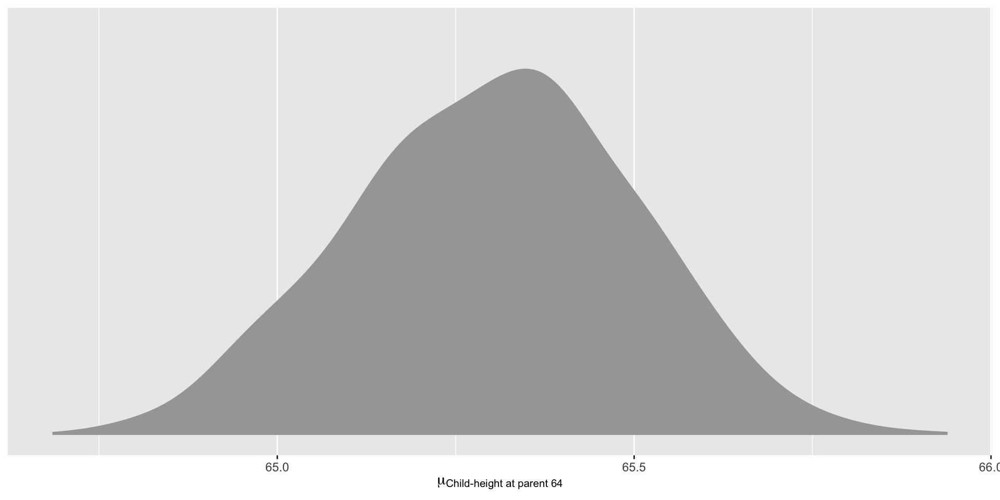
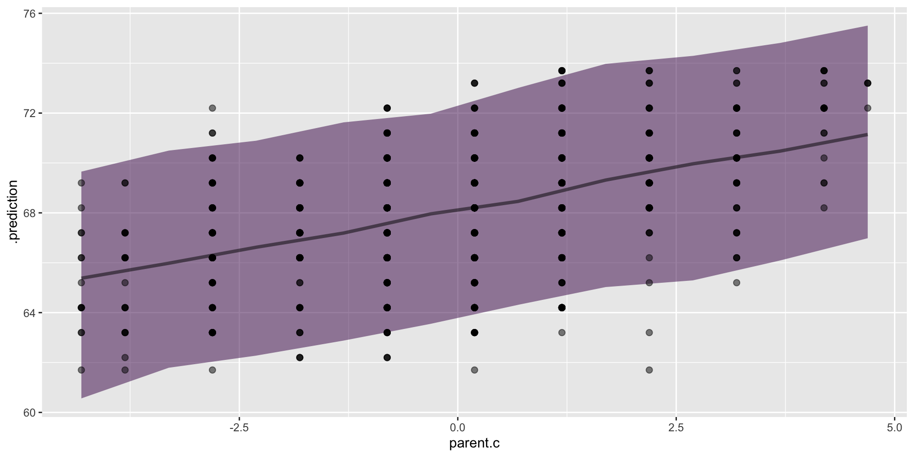
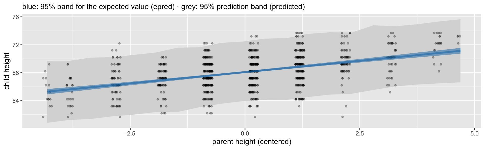
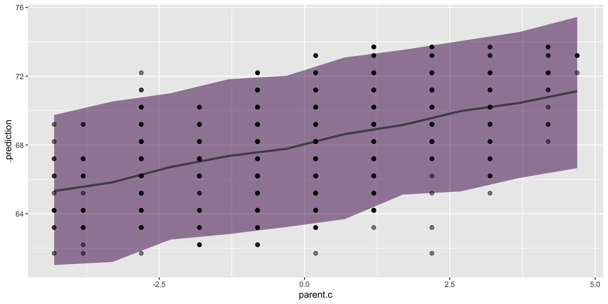
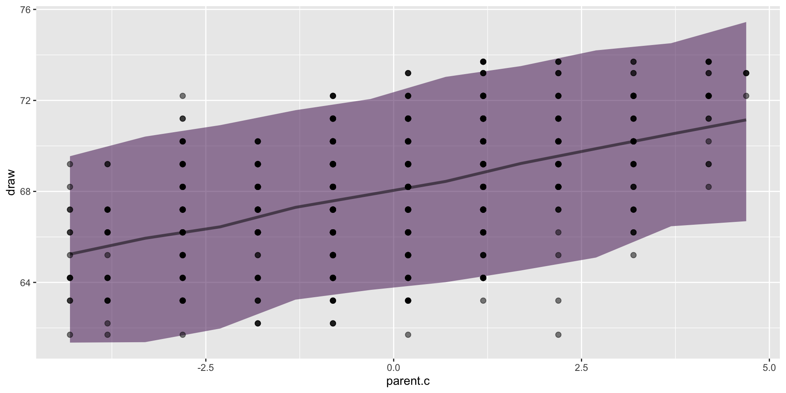
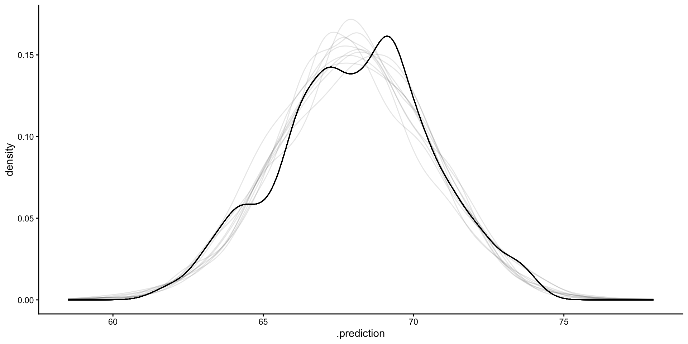

Rows: 928
Columns: 2
$ parent <dbl> 70.5, 68.5, 65.5, 64.5, 64.0, 67.5, 67.5, 67.5, 66.5, 66.5, 66.…
$ child <dbl> 61.7, 61.7, 61.7, 61.7, 61.7, 62.2, 62.2, 62.2, 62.2, 62.2, 62.…Regression 1
Goals for this slide deck
- Example using
brmsto help with nomenclature and procedure. - Begin to think about how we can “feed” our model for insight and profit
- Get used to manipulating our posterior and how it can be used to inform prior choice and model evaluation
Specify the model
We want to understand why people differ on the DV.
\[ y_i \sim Normal( \mu_i , \sigma )\ \] \[\mu_i = \beta_1 X_i \]
- You also have a parameter that is estimated called sigma, which in R lm output is hidden under Residual Standard Error.
Specify the priors
- We will use this same nomenclature to describe our priors on each of the parameters we are modeling. For example, we are estimating \(\beta\) and \(\sigma\), and thus we need two priors.
\[ y_i \sim Normal( \mu_i , \sigma )\ \] \[\mu_i = \beta_1 X_i \]
\[\beta_1 \sim Normal(0, 5)\ \] \[\sigma \sim HalfCauchy(0,10) \]
priors
In general we want to:
- Center our priors around a null effect
- Have dispersion (our accuracy metric) be a balance between not too large and not too little. This choice requires thought, whereas centering a prior around zero requires none.
This also gets around the “subjectivity in objective science” arguments against bayes.
Example
The Galton data

Height data

Specify our model
Likelihood: \[ \text{C_Height}_i \sim Normal( \mu_i , \sigma ) \] Linear model: \[\mu_i = \beta_0 + \beta_1 ( \text{P_Height}_i - {\overline{\mbox{P_Height}}} ) \]
Priors: \[\beta_0 \sim Normal(68, 5)\] \[\beta_1 \sim Normal(0, 5)\] \[\sigma \sim HalfCauchy(0,1)\]
Centering our predictors
parent child parent.c
1 70.5 61.7 2.1918103
2 68.5 61.7 0.1918103
3 65.5 61.7 -2.8081897
4 64.5 61.7 -3.8081897
5 64.0 61.7 -4.3081897
6 67.5 62.2 -0.8081897
7 67.5 62.2 -0.8081897
8 67.5 62.2 -0.8081897
9 66.5 62.2 -1.8081897
10 66.5 62.2 -1.8081897
11 66.5 62.2 -1.8081897
12 64.5 62.2 -3.8081897
13 70.5 63.2 2.1918103
14 69.5 63.2 1.1918103
15 68.5 63.2 0.1918103
16 68.5 63.2 0.1918103
17 68.5 63.2 0.1918103
18 68.5 63.2 0.1918103
19 68.5 63.2 0.1918103
20 68.5 63.2 0.1918103
21 68.5 63.2 0.1918103
22 67.5 63.2 -0.8081897
23 67.5 63.2 -0.8081897
24 67.5 63.2 -0.8081897
25 67.5 63.2 -0.8081897
26 67.5 63.2 -0.8081897
27 66.5 63.2 -1.8081897
28 66.5 63.2 -1.8081897
29 66.5 63.2 -1.8081897
30 65.5 63.2 -2.8081897
31 65.5 63.2 -2.8081897
32 65.5 63.2 -2.8081897
33 65.5 63.2 -2.8081897
34 65.5 63.2 -2.8081897
35 65.5 63.2 -2.8081897
36 65.5 63.2 -2.8081897
37 65.5 63.2 -2.8081897
38 65.5 63.2 -2.8081897
39 64.5 63.2 -3.8081897
40 64.5 63.2 -3.8081897
41 64.5 63.2 -3.8081897
42 64.5 63.2 -3.8081897
43 64.0 63.2 -4.3081897
44 64.0 63.2 -4.3081897
45 69.5 64.2 1.1918103
46 69.5 64.2 1.1918103
47 69.5 64.2 1.1918103
48 69.5 64.2 1.1918103
49 69.5 64.2 1.1918103
50 69.5 64.2 1.1918103
51 69.5 64.2 1.1918103
52 69.5 64.2 1.1918103
53 69.5 64.2 1.1918103
54 69.5 64.2 1.1918103
55 69.5 64.2 1.1918103
56 69.5 64.2 1.1918103
57 69.5 64.2 1.1918103
58 69.5 64.2 1.1918103
59 69.5 64.2 1.1918103
60 69.5 64.2 1.1918103
61 68.5 64.2 0.1918103
62 68.5 64.2 0.1918103
63 68.5 64.2 0.1918103
64 68.5 64.2 0.1918103
65 68.5 64.2 0.1918103
66 68.5 64.2 0.1918103
67 68.5 64.2 0.1918103
68 68.5 64.2 0.1918103
69 68.5 64.2 0.1918103
70 68.5 64.2 0.1918103
71 68.5 64.2 0.1918103
72 67.5 64.2 -0.8081897
73 67.5 64.2 -0.8081897
74 67.5 64.2 -0.8081897
75 67.5 64.2 -0.8081897
76 67.5 64.2 -0.8081897
77 67.5 64.2 -0.8081897
78 67.5 64.2 -0.8081897
79 67.5 64.2 -0.8081897
80 67.5 64.2 -0.8081897
81 67.5 64.2 -0.8081897
82 67.5 64.2 -0.8081897
83 67.5 64.2 -0.8081897
84 67.5 64.2 -0.8081897
85 67.5 64.2 -0.8081897
86 66.5 64.2 -1.8081897
87 66.5 64.2 -1.8081897
88 66.5 64.2 -1.8081897
89 66.5 64.2 -1.8081897
90 66.5 64.2 -1.8081897
91 65.5 64.2 -2.8081897
92 65.5 64.2 -2.8081897
93 65.5 64.2 -2.8081897
94 65.5 64.2 -2.8081897
95 65.5 64.2 -2.8081897
96 64.5 64.2 -3.8081897
97 64.5 64.2 -3.8081897
98 64.5 64.2 -3.8081897
99 64.5 64.2 -3.8081897
100 64.0 64.2 -4.3081897
101 64.0 64.2 -4.3081897
102 64.0 64.2 -4.3081897
103 64.0 64.2 -4.3081897
104 71.5 65.2 3.1918103
105 70.5 65.2 2.1918103
106 69.5 65.2 1.1918103
107 69.5 65.2 1.1918103
108 69.5 65.2 1.1918103
109 69.5 65.2 1.1918103
110 68.5 65.2 0.1918103
111 68.5 65.2 0.1918103
112 68.5 65.2 0.1918103
113 68.5 65.2 0.1918103
114 68.5 65.2 0.1918103
115 68.5 65.2 0.1918103
116 68.5 65.2 0.1918103
117 68.5 65.2 0.1918103
118 68.5 65.2 0.1918103
119 68.5 65.2 0.1918103
120 68.5 65.2 0.1918103
121 68.5 65.2 0.1918103
122 68.5 65.2 0.1918103
123 68.5 65.2 0.1918103
124 68.5 65.2 0.1918103
125 68.5 65.2 0.1918103
126 67.5 65.2 -0.8081897
127 67.5 65.2 -0.8081897
128 67.5 65.2 -0.8081897
129 67.5 65.2 -0.8081897
130 67.5 65.2 -0.8081897
131 67.5 65.2 -0.8081897
132 67.5 65.2 -0.8081897
133 67.5 65.2 -0.8081897
134 67.5 65.2 -0.8081897
135 67.5 65.2 -0.8081897
136 67.5 65.2 -0.8081897
137 67.5 65.2 -0.8081897
138 67.5 65.2 -0.8081897
139 67.5 65.2 -0.8081897
140 67.5 65.2 -0.8081897
141 66.5 65.2 -1.8081897
142 66.5 65.2 -1.8081897
143 65.5 65.2 -2.8081897
144 65.5 65.2 -2.8081897
145 65.5 65.2 -2.8081897
146 65.5 65.2 -2.8081897
147 65.5 65.2 -2.8081897
148 65.5 65.2 -2.8081897
149 65.5 65.2 -2.8081897
150 64.5 65.2 -3.8081897
151 64.0 65.2 -4.3081897
152 71.5 66.2 3.1918103
153 71.5 66.2 3.1918103
154 71.5 66.2 3.1918103
155 70.5 66.2 2.1918103
156 69.5 66.2 1.1918103
157 69.5 66.2 1.1918103
158 69.5 66.2 1.1918103
159 69.5 66.2 1.1918103
160 69.5 66.2 1.1918103
161 69.5 66.2 1.1918103
162 69.5 66.2 1.1918103
163 69.5 66.2 1.1918103
164 69.5 66.2 1.1918103
165 69.5 66.2 1.1918103
166 69.5 66.2 1.1918103
167 69.5 66.2 1.1918103
168 69.5 66.2 1.1918103
169 69.5 66.2 1.1918103
170 69.5 66.2 1.1918103
171 69.5 66.2 1.1918103
172 69.5 66.2 1.1918103
173 68.5 66.2 0.1918103
174 68.5 66.2 0.1918103
175 68.5 66.2 0.1918103
176 68.5 66.2 0.1918103
177 68.5 66.2 0.1918103
178 68.5 66.2 0.1918103
179 68.5 66.2 0.1918103
180 68.5 66.2 0.1918103
181 68.5 66.2 0.1918103
182 68.5 66.2 0.1918103
183 68.5 66.2 0.1918103
184 68.5 66.2 0.1918103
185 68.5 66.2 0.1918103
186 68.5 66.2 0.1918103
187 68.5 66.2 0.1918103
188 68.5 66.2 0.1918103
189 68.5 66.2 0.1918103
190 68.5 66.2 0.1918103
191 68.5 66.2 0.1918103
192 68.5 66.2 0.1918103
193 68.5 66.2 0.1918103
194 68.5 66.2 0.1918103
195 68.5 66.2 0.1918103
196 68.5 66.2 0.1918103
197 68.5 66.2 0.1918103
198 67.5 66.2 -0.8081897
199 67.5 66.2 -0.8081897
200 67.5 66.2 -0.8081897
201 67.5 66.2 -0.8081897
202 67.5 66.2 -0.8081897
203 67.5 66.2 -0.8081897
204 67.5 66.2 -0.8081897
205 67.5 66.2 -0.8081897
206 67.5 66.2 -0.8081897
207 67.5 66.2 -0.8081897
208 67.5 66.2 -0.8081897
209 67.5 66.2 -0.8081897
210 67.5 66.2 -0.8081897
211 67.5 66.2 -0.8081897
212 67.5 66.2 -0.8081897
213 67.5 66.2 -0.8081897
214 67.5 66.2 -0.8081897
215 67.5 66.2 -0.8081897
216 67.5 66.2 -0.8081897
217 67.5 66.2 -0.8081897
218 67.5 66.2 -0.8081897
219 67.5 66.2 -0.8081897
220 67.5 66.2 -0.8081897
221 67.5 66.2 -0.8081897
222 67.5 66.2 -0.8081897
223 67.5 66.2 -0.8081897
224 67.5 66.2 -0.8081897
225 67.5 66.2 -0.8081897
226 67.5 66.2 -0.8081897
227 67.5 66.2 -0.8081897
228 67.5 66.2 -0.8081897
229 67.5 66.2 -0.8081897
230 67.5 66.2 -0.8081897
231 67.5 66.2 -0.8081897
232 67.5 66.2 -0.8081897
233 67.5 66.2 -0.8081897
234 66.5 66.2 -1.8081897
235 66.5 66.2 -1.8081897
236 66.5 66.2 -1.8081897
237 66.5 66.2 -1.8081897
238 66.5 66.2 -1.8081897
239 66.5 66.2 -1.8081897
240 66.5 66.2 -1.8081897
241 66.5 66.2 -1.8081897
242 66.5 66.2 -1.8081897
243 66.5 66.2 -1.8081897
244 66.5 66.2 -1.8081897
245 66.5 66.2 -1.8081897
246 66.5 66.2 -1.8081897
247 66.5 66.2 -1.8081897
248 66.5 66.2 -1.8081897
249 66.5 66.2 -1.8081897
250 66.5 66.2 -1.8081897
251 65.5 66.2 -2.8081897
252 65.5 66.2 -2.8081897
253 65.5 66.2 -2.8081897
254 65.5 66.2 -2.8081897
255 65.5 66.2 -2.8081897
256 65.5 66.2 -2.8081897
257 65.5 66.2 -2.8081897
258 65.5 66.2 -2.8081897
259 65.5 66.2 -2.8081897
260 65.5 66.2 -2.8081897
261 65.5 66.2 -2.8081897
262 64.5 66.2 -3.8081897
263 64.5 66.2 -3.8081897
264 64.5 66.2 -3.8081897
265 64.5 66.2 -3.8081897
266 64.5 66.2 -3.8081897
267 64.0 66.2 -4.3081897
268 64.0 66.2 -4.3081897
269 71.5 67.2 3.1918103
270 71.5 67.2 3.1918103
271 71.5 67.2 3.1918103
272 71.5 67.2 3.1918103
273 70.5 67.2 2.1918103
274 70.5 67.2 2.1918103
275 70.5 67.2 2.1918103
276 69.5 67.2 1.1918103
277 69.5 67.2 1.1918103
278 69.5 67.2 1.1918103
279 69.5 67.2 1.1918103
280 69.5 67.2 1.1918103
281 69.5 67.2 1.1918103
282 69.5 67.2 1.1918103
283 69.5 67.2 1.1918103
284 69.5 67.2 1.1918103
285 69.5 67.2 1.1918103
286 69.5 67.2 1.1918103
287 69.5 67.2 1.1918103
288 69.5 67.2 1.1918103
289 69.5 67.2 1.1918103
290 69.5 67.2 1.1918103
291 69.5 67.2 1.1918103
292 69.5 67.2 1.1918103
293 69.5 67.2 1.1918103
294 69.5 67.2 1.1918103
295 69.5 67.2 1.1918103
296 69.5 67.2 1.1918103
297 69.5 67.2 1.1918103
298 69.5 67.2 1.1918103
299 69.5 67.2 1.1918103
300 69.5 67.2 1.1918103
301 69.5 67.2 1.1918103
302 69.5 67.2 1.1918103
303 68.5 67.2 0.1918103
304 68.5 67.2 0.1918103
305 68.5 67.2 0.1918103
306 68.5 67.2 0.1918103
307 68.5 67.2 0.1918103
308 68.5 67.2 0.1918103
309 68.5 67.2 0.1918103
310 68.5 67.2 0.1918103
311 68.5 67.2 0.1918103
312 68.5 67.2 0.1918103
313 68.5 67.2 0.1918103
314 68.5 67.2 0.1918103
315 68.5 67.2 0.1918103
316 68.5 67.2 0.1918103
317 68.5 67.2 0.1918103
318 68.5 67.2 0.1918103
319 68.5 67.2 0.1918103
320 68.5 67.2 0.1918103
321 68.5 67.2 0.1918103
322 68.5 67.2 0.1918103
323 68.5 67.2 0.1918103
324 68.5 67.2 0.1918103
325 68.5 67.2 0.1918103
326 68.5 67.2 0.1918103
327 68.5 67.2 0.1918103
328 68.5 67.2 0.1918103
329 68.5 67.2 0.1918103
330 68.5 67.2 0.1918103
331 68.5 67.2 0.1918103
332 68.5 67.2 0.1918103
333 68.5 67.2 0.1918103
334 67.5 67.2 -0.8081897
335 67.5 67.2 -0.8081897
336 67.5 67.2 -0.8081897
337 67.5 67.2 -0.8081897
338 67.5 67.2 -0.8081897
339 67.5 67.2 -0.8081897
340 67.5 67.2 -0.8081897
341 67.5 67.2 -0.8081897
342 67.5 67.2 -0.8081897
343 67.5 67.2 -0.8081897
344 67.5 67.2 -0.8081897
345 67.5 67.2 -0.8081897
346 67.5 67.2 -0.8081897
347 67.5 67.2 -0.8081897
348 67.5 67.2 -0.8081897
349 67.5 67.2 -0.8081897
350 67.5 67.2 -0.8081897
351 67.5 67.2 -0.8081897
352 67.5 67.2 -0.8081897
353 67.5 67.2 -0.8081897
354 67.5 67.2 -0.8081897
355 67.5 67.2 -0.8081897
356 67.5 67.2 -0.8081897
357 67.5 67.2 -0.8081897
358 67.5 67.2 -0.8081897
359 67.5 67.2 -0.8081897
360 67.5 67.2 -0.8081897
361 67.5 67.2 -0.8081897
362 67.5 67.2 -0.8081897
363 67.5 67.2 -0.8081897
364 67.5 67.2 -0.8081897
365 67.5 67.2 -0.8081897
366 67.5 67.2 -0.8081897
367 67.5 67.2 -0.8081897
368 67.5 67.2 -0.8081897
369 67.5 67.2 -0.8081897
370 67.5 67.2 -0.8081897
371 67.5 67.2 -0.8081897
372 66.5 67.2 -1.8081897
373 66.5 67.2 -1.8081897
374 66.5 67.2 -1.8081897
375 66.5 67.2 -1.8081897
376 66.5 67.2 -1.8081897
377 66.5 67.2 -1.8081897
378 66.5 67.2 -1.8081897
379 66.5 67.2 -1.8081897
380 66.5 67.2 -1.8081897
381 66.5 67.2 -1.8081897
382 66.5 67.2 -1.8081897
383 66.5 67.2 -1.8081897
384 66.5 67.2 -1.8081897
385 66.5 67.2 -1.8081897
386 66.5 67.2 -1.8081897
387 66.5 67.2 -1.8081897
388 66.5 67.2 -1.8081897
389 65.5 67.2 -2.8081897
390 65.5 67.2 -2.8081897
391 65.5 67.2 -2.8081897
392 65.5 67.2 -2.8081897
393 65.5 67.2 -2.8081897
394 65.5 67.2 -2.8081897
395 65.5 67.2 -2.8081897
396 65.5 67.2 -2.8081897
397 65.5 67.2 -2.8081897
398 65.5 67.2 -2.8081897
399 65.5 67.2 -2.8081897
400 64.5 67.2 -3.8081897
401 64.5 67.2 -3.8081897
402 64.5 67.2 -3.8081897
403 64.5 67.2 -3.8081897
404 64.5 67.2 -3.8081897
405 64.0 67.2 -4.3081897
406 64.0 67.2 -4.3081897
407 72.5 68.2 4.1918103
408 71.5 68.2 3.1918103
409 71.5 68.2 3.1918103
410 71.5 68.2 3.1918103
411 70.5 68.2 2.1918103
412 70.5 68.2 2.1918103
413 70.5 68.2 2.1918103
414 70.5 68.2 2.1918103
415 70.5 68.2 2.1918103
416 70.5 68.2 2.1918103
417 70.5 68.2 2.1918103
418 70.5 68.2 2.1918103
419 70.5 68.2 2.1918103
420 70.5 68.2 2.1918103
421 70.5 68.2 2.1918103
422 70.5 68.2 2.1918103
423 69.5 68.2 1.1918103
424 69.5 68.2 1.1918103
425 69.5 68.2 1.1918103
426 69.5 68.2 1.1918103
427 69.5 68.2 1.1918103
428 69.5 68.2 1.1918103
429 69.5 68.2 1.1918103
430 69.5 68.2 1.1918103
431 69.5 68.2 1.1918103
432 69.5 68.2 1.1918103
433 69.5 68.2 1.1918103
434 69.5 68.2 1.1918103
435 69.5 68.2 1.1918103
436 69.5 68.2 1.1918103
437 69.5 68.2 1.1918103
438 69.5 68.2 1.1918103
439 69.5 68.2 1.1918103
440 69.5 68.2 1.1918103
441 69.5 68.2 1.1918103
442 69.5 68.2 1.1918103
443 68.5 68.2 0.1918103
444 68.5 68.2 0.1918103
445 68.5 68.2 0.1918103
446 68.5 68.2 0.1918103
447 68.5 68.2 0.1918103
448 68.5 68.2 0.1918103
449 68.5 68.2 0.1918103
450 68.5 68.2 0.1918103
451 68.5 68.2 0.1918103
452 68.5 68.2 0.1918103
453 68.5 68.2 0.1918103
454 68.5 68.2 0.1918103
455 68.5 68.2 0.1918103
456 68.5 68.2 0.1918103
457 68.5 68.2 0.1918103
458 68.5 68.2 0.1918103
459 68.5 68.2 0.1918103
460 68.5 68.2 0.1918103
461 68.5 68.2 0.1918103
462 68.5 68.2 0.1918103
463 68.5 68.2 0.1918103
464 68.5 68.2 0.1918103
465 68.5 68.2 0.1918103
466 68.5 68.2 0.1918103
467 68.5 68.2 0.1918103
468 68.5 68.2 0.1918103
469 68.5 68.2 0.1918103
470 68.5 68.2 0.1918103
471 68.5 68.2 0.1918103
472 68.5 68.2 0.1918103
473 68.5 68.2 0.1918103
474 68.5 68.2 0.1918103
475 68.5 68.2 0.1918103
476 68.5 68.2 0.1918103
477 67.5 68.2 -0.8081897
478 67.5 68.2 -0.8081897
479 67.5 68.2 -0.8081897
480 67.5 68.2 -0.8081897
481 67.5 68.2 -0.8081897
482 67.5 68.2 -0.8081897
483 67.5 68.2 -0.8081897
484 67.5 68.2 -0.8081897
485 67.5 68.2 -0.8081897
486 67.5 68.2 -0.8081897
487 67.5 68.2 -0.8081897
488 67.5 68.2 -0.8081897
489 67.5 68.2 -0.8081897
490 67.5 68.2 -0.8081897
491 67.5 68.2 -0.8081897
492 67.5 68.2 -0.8081897
493 67.5 68.2 -0.8081897
494 67.5 68.2 -0.8081897
495 67.5 68.2 -0.8081897
496 67.5 68.2 -0.8081897
497 67.5 68.2 -0.8081897
498 67.5 68.2 -0.8081897
499 67.5 68.2 -0.8081897
500 67.5 68.2 -0.8081897
501 67.5 68.2 -0.8081897
502 67.5 68.2 -0.8081897
503 67.5 68.2 -0.8081897
504 67.5 68.2 -0.8081897
505 66.5 68.2 -1.8081897
506 66.5 68.2 -1.8081897
507 66.5 68.2 -1.8081897
508 66.5 68.2 -1.8081897
509 66.5 68.2 -1.8081897
510 66.5 68.2 -1.8081897
511 66.5 68.2 -1.8081897
512 66.5 68.2 -1.8081897
513 66.5 68.2 -1.8081897
514 66.5 68.2 -1.8081897
515 66.5 68.2 -1.8081897
516 66.5 68.2 -1.8081897
517 66.5 68.2 -1.8081897
518 66.5 68.2 -1.8081897
519 65.5 68.2 -2.8081897
520 65.5 68.2 -2.8081897
521 65.5 68.2 -2.8081897
522 65.5 68.2 -2.8081897
523 65.5 68.2 -2.8081897
524 65.5 68.2 -2.8081897
525 65.5 68.2 -2.8081897
526 64.0 68.2 -4.3081897
527 72.5 69.2 4.1918103
528 72.5 69.2 4.1918103
529 71.5 69.2 3.1918103
530 71.5 69.2 3.1918103
531 71.5 69.2 3.1918103
532 71.5 69.2 3.1918103
533 71.5 69.2 3.1918103
534 70.5 69.2 2.1918103
535 70.5 69.2 2.1918103
536 70.5 69.2 2.1918103
537 70.5 69.2 2.1918103
538 70.5 69.2 2.1918103
539 70.5 69.2 2.1918103
540 70.5 69.2 2.1918103
541 70.5 69.2 2.1918103
542 70.5 69.2 2.1918103
543 70.5 69.2 2.1918103
544 70.5 69.2 2.1918103
545 70.5 69.2 2.1918103
546 70.5 69.2 2.1918103
547 70.5 69.2 2.1918103
548 70.5 69.2 2.1918103
549 70.5 69.2 2.1918103
550 70.5 69.2 2.1918103
551 70.5 69.2 2.1918103
552 69.5 69.2 1.1918103
553 69.5 69.2 1.1918103
554 69.5 69.2 1.1918103
555 69.5 69.2 1.1918103
556 69.5 69.2 1.1918103
557 69.5 69.2 1.1918103
558 69.5 69.2 1.1918103
559 69.5 69.2 1.1918103
560 69.5 69.2 1.1918103
561 69.5 69.2 1.1918103
562 69.5 69.2 1.1918103
563 69.5 69.2 1.1918103
564 69.5 69.2 1.1918103
565 69.5 69.2 1.1918103
566 69.5 69.2 1.1918103
567 69.5 69.2 1.1918103
568 69.5 69.2 1.1918103
569 69.5 69.2 1.1918103
570 69.5 69.2 1.1918103
571 69.5 69.2 1.1918103
572 69.5 69.2 1.1918103
573 69.5 69.2 1.1918103
574 69.5 69.2 1.1918103
575 69.5 69.2 1.1918103
576 69.5 69.2 1.1918103
577 69.5 69.2 1.1918103
578 69.5 69.2 1.1918103
579 69.5 69.2 1.1918103
580 69.5 69.2 1.1918103
581 69.5 69.2 1.1918103
582 69.5 69.2 1.1918103
583 69.5 69.2 1.1918103
584 69.5 69.2 1.1918103
585 68.5 69.2 0.1918103
586 68.5 69.2 0.1918103
587 68.5 69.2 0.1918103
588 68.5 69.2 0.1918103
589 68.5 69.2 0.1918103
590 68.5 69.2 0.1918103
591 68.5 69.2 0.1918103
592 68.5 69.2 0.1918103
593 68.5 69.2 0.1918103
594 68.5 69.2 0.1918103
595 68.5 69.2 0.1918103
596 68.5 69.2 0.1918103
597 68.5 69.2 0.1918103
598 68.5 69.2 0.1918103
599 68.5 69.2 0.1918103
600 68.5 69.2 0.1918103
601 68.5 69.2 0.1918103
602 68.5 69.2 0.1918103
603 68.5 69.2 0.1918103
604 68.5 69.2 0.1918103
605 68.5 69.2 0.1918103
606 68.5 69.2 0.1918103
607 68.5 69.2 0.1918103
608 68.5 69.2 0.1918103
609 68.5 69.2 0.1918103
610 68.5 69.2 0.1918103
611 68.5 69.2 0.1918103
612 68.5 69.2 0.1918103
613 68.5 69.2 0.1918103
614 68.5 69.2 0.1918103
615 68.5 69.2 0.1918103
616 68.5 69.2 0.1918103
617 68.5 69.2 0.1918103
618 68.5 69.2 0.1918103
619 68.5 69.2 0.1918103
620 68.5 69.2 0.1918103
621 68.5 69.2 0.1918103
622 68.5 69.2 0.1918103
623 68.5 69.2 0.1918103
624 68.5 69.2 0.1918103
625 68.5 69.2 0.1918103
626 68.5 69.2 0.1918103
627 68.5 69.2 0.1918103
628 68.5 69.2 0.1918103
629 68.5 69.2 0.1918103
630 68.5 69.2 0.1918103
631 68.5 69.2 0.1918103
632 68.5 69.2 0.1918103
633 67.5 69.2 -0.8081897
634 67.5 69.2 -0.8081897
635 67.5 69.2 -0.8081897
636 67.5 69.2 -0.8081897
637 67.5 69.2 -0.8081897
638 67.5 69.2 -0.8081897
639 67.5 69.2 -0.8081897
640 67.5 69.2 -0.8081897
641 67.5 69.2 -0.8081897
642 67.5 69.2 -0.8081897
643 67.5 69.2 -0.8081897
644 67.5 69.2 -0.8081897
645 67.5 69.2 -0.8081897
646 67.5 69.2 -0.8081897
647 67.5 69.2 -0.8081897
648 67.5 69.2 -0.8081897
649 67.5 69.2 -0.8081897
650 67.5 69.2 -0.8081897
651 67.5 69.2 -0.8081897
652 67.5 69.2 -0.8081897
653 67.5 69.2 -0.8081897
654 67.5 69.2 -0.8081897
655 67.5 69.2 -0.8081897
656 67.5 69.2 -0.8081897
657 67.5 69.2 -0.8081897
658 67.5 69.2 -0.8081897
659 67.5 69.2 -0.8081897
660 67.5 69.2 -0.8081897
661 67.5 69.2 -0.8081897
662 67.5 69.2 -0.8081897
663 67.5 69.2 -0.8081897
664 67.5 69.2 -0.8081897
665 67.5 69.2 -0.8081897
666 67.5 69.2 -0.8081897
667 67.5 69.2 -0.8081897
668 67.5 69.2 -0.8081897
669 67.5 69.2 -0.8081897
670 67.5 69.2 -0.8081897
671 66.5 69.2 -1.8081897
672 66.5 69.2 -1.8081897
673 66.5 69.2 -1.8081897
674 66.5 69.2 -1.8081897
675 66.5 69.2 -1.8081897
676 66.5 69.2 -1.8081897
677 66.5 69.2 -1.8081897
678 66.5 69.2 -1.8081897
679 66.5 69.2 -1.8081897
680 66.5 69.2 -1.8081897
681 66.5 69.2 -1.8081897
682 66.5 69.2 -1.8081897
683 66.5 69.2 -1.8081897
684 65.5 69.2 -2.8081897
685 65.5 69.2 -2.8081897
686 65.5 69.2 -2.8081897
687 65.5 69.2 -2.8081897
688 65.5 69.2 -2.8081897
689 65.5 69.2 -2.8081897
690 65.5 69.2 -2.8081897
691 64.5 69.2 -3.8081897
692 64.5 69.2 -3.8081897
693 64.0 69.2 -4.3081897
694 72.5 70.2 4.1918103
695 71.5 70.2 3.1918103
696 71.5 70.2 3.1918103
697 71.5 70.2 3.1918103
698 71.5 70.2 3.1918103
699 71.5 70.2 3.1918103
700 71.5 70.2 3.1918103
701 71.5 70.2 3.1918103
702 71.5 70.2 3.1918103
703 71.5 70.2 3.1918103
704 71.5 70.2 3.1918103
705 70.5 70.2 2.1918103
706 70.5 70.2 2.1918103
707 70.5 70.2 2.1918103
708 70.5 70.2 2.1918103
709 70.5 70.2 2.1918103
710 70.5 70.2 2.1918103
711 70.5 70.2 2.1918103
712 70.5 70.2 2.1918103
713 70.5 70.2 2.1918103
714 70.5 70.2 2.1918103
715 70.5 70.2 2.1918103
716 70.5 70.2 2.1918103
717 70.5 70.2 2.1918103
718 70.5 70.2 2.1918103
719 69.5 70.2 1.1918103
720 69.5 70.2 1.1918103
721 69.5 70.2 1.1918103
722 69.5 70.2 1.1918103
723 69.5 70.2 1.1918103
724 69.5 70.2 1.1918103
725 69.5 70.2 1.1918103
726 69.5 70.2 1.1918103
727 69.5 70.2 1.1918103
728 69.5 70.2 1.1918103
729 69.5 70.2 1.1918103
730 69.5 70.2 1.1918103
731 69.5 70.2 1.1918103
732 69.5 70.2 1.1918103
733 69.5 70.2 1.1918103
734 69.5 70.2 1.1918103
735 69.5 70.2 1.1918103
736 69.5 70.2 1.1918103
737 69.5 70.2 1.1918103
738 69.5 70.2 1.1918103
739 69.5 70.2 1.1918103
740 69.5 70.2 1.1918103
741 69.5 70.2 1.1918103
742 69.5 70.2 1.1918103
743 69.5 70.2 1.1918103
744 68.5 70.2 0.1918103
745 68.5 70.2 0.1918103
746 68.5 70.2 0.1918103
747 68.5 70.2 0.1918103
748 68.5 70.2 0.1918103
749 68.5 70.2 0.1918103
750 68.5 70.2 0.1918103
751 68.5 70.2 0.1918103
752 68.5 70.2 0.1918103
753 68.5 70.2 0.1918103
754 68.5 70.2 0.1918103
755 68.5 70.2 0.1918103
756 68.5 70.2 0.1918103
757 68.5 70.2 0.1918103
758 68.5 70.2 0.1918103
759 68.5 70.2 0.1918103
760 68.5 70.2 0.1918103
761 68.5 70.2 0.1918103
762 68.5 70.2 0.1918103
763 68.5 70.2 0.1918103
764 68.5 70.2 0.1918103
765 67.5 70.2 -0.8081897
766 67.5 70.2 -0.8081897
767 67.5 70.2 -0.8081897
768 67.5 70.2 -0.8081897
769 67.5 70.2 -0.8081897
770 67.5 70.2 -0.8081897
771 67.5 70.2 -0.8081897
772 67.5 70.2 -0.8081897
773 67.5 70.2 -0.8081897
774 67.5 70.2 -0.8081897
775 67.5 70.2 -0.8081897
776 67.5 70.2 -0.8081897
777 67.5 70.2 -0.8081897
778 67.5 70.2 -0.8081897
779 67.5 70.2 -0.8081897
780 67.5 70.2 -0.8081897
781 67.5 70.2 -0.8081897
782 67.5 70.2 -0.8081897
783 67.5 70.2 -0.8081897
784 66.5 70.2 -1.8081897
785 66.5 70.2 -1.8081897
786 66.5 70.2 -1.8081897
787 66.5 70.2 -1.8081897
788 65.5 70.2 -2.8081897
789 65.5 70.2 -2.8081897
790 65.5 70.2 -2.8081897
791 65.5 70.2 -2.8081897
792 65.5 70.2 -2.8081897
793 72.5 71.2 4.1918103
794 72.5 71.2 4.1918103
795 71.5 71.2 3.1918103
796 71.5 71.2 3.1918103
797 71.5 71.2 3.1918103
798 71.5 71.2 3.1918103
799 70.5 71.2 2.1918103
800 70.5 71.2 2.1918103
801 70.5 71.2 2.1918103
802 70.5 71.2 2.1918103
803 70.5 71.2 2.1918103
804 70.5 71.2 2.1918103
805 70.5 71.2 2.1918103
806 69.5 71.2 1.1918103
807 69.5 71.2 1.1918103
808 69.5 71.2 1.1918103
809 69.5 71.2 1.1918103
810 69.5 71.2 1.1918103
811 69.5 71.2 1.1918103
812 69.5 71.2 1.1918103
813 69.5 71.2 1.1918103
814 69.5 71.2 1.1918103
815 69.5 71.2 1.1918103
816 69.5 71.2 1.1918103
817 69.5 71.2 1.1918103
818 69.5 71.2 1.1918103
819 69.5 71.2 1.1918103
820 69.5 71.2 1.1918103
821 69.5 71.2 1.1918103
822 69.5 71.2 1.1918103
823 69.5 71.2 1.1918103
824 69.5 71.2 1.1918103
825 69.5 71.2 1.1918103
826 68.5 71.2 0.1918103
827 68.5 71.2 0.1918103
828 68.5 71.2 0.1918103
829 68.5 71.2 0.1918103
830 68.5 71.2 0.1918103
831 68.5 71.2 0.1918103
832 68.5 71.2 0.1918103
833 68.5 71.2 0.1918103
834 68.5 71.2 0.1918103
835 68.5 71.2 0.1918103
836 68.5 71.2 0.1918103
837 68.5 71.2 0.1918103
838 68.5 71.2 0.1918103
839 68.5 71.2 0.1918103
840 68.5 71.2 0.1918103
841 68.5 71.2 0.1918103
842 68.5 71.2 0.1918103
843 68.5 71.2 0.1918103
844 67.5 71.2 -0.8081897
845 67.5 71.2 -0.8081897
846 67.5 71.2 -0.8081897
847 67.5 71.2 -0.8081897
848 67.5 71.2 -0.8081897
849 67.5 71.2 -0.8081897
850 67.5 71.2 -0.8081897
851 67.5 71.2 -0.8081897
852 67.5 71.2 -0.8081897
853 67.5 71.2 -0.8081897
854 67.5 71.2 -0.8081897
855 65.5 71.2 -2.8081897
856 65.5 71.2 -2.8081897
857 73.0 72.2 4.6918103
858 72.5 72.2 4.1918103
859 72.5 72.2 4.1918103
860 72.5 72.2 4.1918103
861 72.5 72.2 4.1918103
862 72.5 72.2 4.1918103
863 72.5 72.2 4.1918103
864 72.5 72.2 4.1918103
865 71.5 72.2 3.1918103
866 71.5 72.2 3.1918103
867 71.5 72.2 3.1918103
868 71.5 72.2 3.1918103
869 71.5 72.2 3.1918103
870 71.5 72.2 3.1918103
871 71.5 72.2 3.1918103
872 71.5 72.2 3.1918103
873 71.5 72.2 3.1918103
874 70.5 72.2 2.1918103
875 70.5 72.2 2.1918103
876 70.5 72.2 2.1918103
877 70.5 72.2 2.1918103
878 69.5 72.2 1.1918103
879 69.5 72.2 1.1918103
880 69.5 72.2 1.1918103
881 69.5 72.2 1.1918103
882 69.5 72.2 1.1918103
883 69.5 72.2 1.1918103
884 69.5 72.2 1.1918103
885 69.5 72.2 1.1918103
886 69.5 72.2 1.1918103
887 69.5 72.2 1.1918103
888 69.5 72.2 1.1918103
889 68.5 72.2 0.1918103
890 68.5 72.2 0.1918103
891 68.5 72.2 0.1918103
892 68.5 72.2 0.1918103
893 67.5 72.2 -0.8081897
894 67.5 72.2 -0.8081897
895 67.5 72.2 -0.8081897
896 67.5 72.2 -0.8081897
897 65.5 72.2 -2.8081897
898 73.0 73.2 4.6918103
899 73.0 73.2 4.6918103
900 73.0 73.2 4.6918103
901 72.5 73.2 4.1918103
902 72.5 73.2 4.1918103
903 71.5 73.2 3.1918103
904 71.5 73.2 3.1918103
905 70.5 73.2 2.1918103
906 70.5 73.2 2.1918103
907 70.5 73.2 2.1918103
908 69.5 73.2 1.1918103
909 69.5 73.2 1.1918103
910 69.5 73.2 1.1918103
911 69.5 73.2 1.1918103
912 68.5 73.2 0.1918103
913 68.5 73.2 0.1918103
914 68.5 73.2 0.1918103
915 72.5 73.7 4.1918103
916 72.5 73.7 4.1918103
917 72.5 73.7 4.1918103
918 72.5 73.7 4.1918103
919 71.5 73.7 3.1918103
920 71.5 73.7 3.1918103
921 70.5 73.7 2.1918103
922 70.5 73.7 2.1918103
923 70.5 73.7 2.1918103
924 69.5 73.7 1.1918103
925 69.5 73.7 1.1918103
926 69.5 73.7 1.1918103
927 69.5 73.7 1.1918103
928 69.5 73.7 1.1918103Prior for intercept

Prior for regression coefficient

Prior for sigma

We know that standard deviations have to be positive.
What is an upper bound possibility?
Prior predictive: what do our priors expect?
What do our priors say about what our model expects? Easy to do in head with a simple models, but harder when we get into nonlinear and/or multivariable models.
We can take our prior and simulate what they say about our potential results.
Our goal is to create an efficient and useful model. One that makes impossible predictions prior to seeing the data isn’t too useful.
Prior predictive by hand
How do we create it? We sample from the priors. Use that to create regression lines (intercept and slope). Then plot.
Code
tibble(n = 1:100,
a = rnorm(100, mean = 68, sd = 5),
b = rnorm(100, mean = 0, sd = 5)) %>%
expand(nesting(n, a, b), height = range(galton.data$parent)) %>%
mutate(c.height = a + b * (height - mean(galton.data$parent))) %>%
ggplot(aes(x = height, y = c.height, group = n)) +
geom_line(alpha = 1/10) +
coord_cartesian(ylim = c(36, 96)) 
Prior predictive with brms
brms can do this for us: sample_prior = "only" fits the model while ignoring the data, so the “posterior” is just the prior.
Code
library(brms)
library(tidybayes)
library(modelr)
fit.1p <-
brm(family = gaussian,
child ~ 1 + parent.c,
prior = c(prior(normal(68, 5), class = Intercept),
prior(normal(0, 5), class = b),
prior(cauchy(0, 1), class = sigma)),
data = galton.data,
sample_prior = "only",
backend = "cmdstanr",
iter = 1000, warmup = 500, chains = 2, cores = 2,
file = "fit.1p")
galton.data %>%
data_grid(parent.c = seq_range(parent.c, n = 2)) %>%
add_epred_draws(fit.1p, ndraws = 100) %>%
ggplot(aes(x = parent.c, y = .epred, group = .draw)) +
geom_line(alpha = 1/10) +
coord_cartesian(ylim = c(36, 96)) +
labs(y = "child height (prior predicted)")
Prior predictive: what to do about it
We could do a few things:
- Constrain the slope to be positive
- Reduce the uncertainty (SDs) in our priors
- Leave as is
It really depends on whether the priors are important and/or costly, computationally
Last time we went with option 2 and tightened the slope prior to N(0, 0.5). Today we’ll do option 3 and leave it at N(0, 5) on purpose: with 928 families, the data will overwhelm even a silly prior. Watch for that when we plot the prior and posterior together.
brms syntax
model.name <- # name your fit
brm(family = gaussian, # what is your likelihood?
Y ~ X, # insert model
prior = prior, # your priors go here
data = data, # your data goes here
sample_prior = "yes", # also draw from the priors ("only" ignores the data: a prior predictive)
iter = 1000, warmup = 500, chains = 4, cores = 4, # wait for this
backend = "cmdstanr", # quicker than alternative Rstan library
file = "fits/b04.01") # save your samplesbrms: formulas and priors as objects
You can also set aspects of it separately
Fitting the model
Default priors: get_prior()
- What if you don’t know what priors should be in your model?
- Default priors are usually not what you want: flat on the slopes, and the intercept and sigma defaults are centered and scaled using your own outcome data
Code
prior class coef group resp dpar nlpar lb ub tag
(flat) b
(flat) b parent.c
student_t(3, 68.2, 3) Intercept
student_t(3, 0, 3) sigma 0
source
default
(vectorized)
default
defaultThe summary
Family: gaussian
Links: mu = identity
Formula: child ~ 1 + parent.c
Data: galton.data (Number of observations: 928)
Draws: 2 chains, each with iter = 1000; warmup = 500; thin = 1;
total post-warmup draws = 1000
Regression Coefficients:
Estimate Est.Error l-95% CI u-95% CI Rhat Bulk_ESS Tail_ESS
Intercept 68.09 0.08 67.95 68.24 1.00 929 741
parent.c 0.65 0.04 0.56 0.73 1.00 823 611
Further Distributional Parameters:
Estimate Est.Error l-95% CI u-95% CI Rhat Bulk_ESS Tail_ESS
sigma 2.24 0.05 2.15 2.34 1.01 1041 733
Draws were sampled using sample(hmc). For each parameter, Bulk_ESS
and Tail_ESS are effective sample size measures, and Rhat is the potential
scale reduction factor on split chains (at convergence, Rhat = 1).Reading the summary
| Column | What it is |
|---|---|
Estimate |
posterior mean of the parameter |
Est.Error |
posterior SD: the Bayesian analogue of a standard error |
l-95% CI, u-95% CI |
2.5th and 97.5th percentiles of the draws (an equal-tailed 95% interval) |
Rhat |
do the chains agree? Want ≈ 1.00 |
Bulk_ESS, Tail_ESS |
how many effectively independent draws; want hundreds or more |
Intercept here is the expected child height at the average parent height (because we centered), and sigma is the residual SD in inches. Rhat and ESS get the full treatment in week 5.
compare with lm
Code
# A tibble: 2 × 5
term estimate std.error statistic p.value
<chr> <dbl> <dbl> <dbl> <dbl>
1 (Intercept) 68.1 0.0735 927. 0
2 parent.c 0.646 0.0411 15.7 1.73e-49[1] 2.238547Nearly identical estimates and SEs (vs. Est.Error). With 928 families and weak priors, the likelihood dominates and Bayes and OLS agree. The difference is in what we can do with the result (and how we interpret the intervals).
Trace plots

lm() and brms side by side

The posterior is made of draws
The posterior is made up of samples (often referred to as draws).
Visualize with a distribution
Very simplistically, the algorithm tries different potential values. Parameter values that are more consistent with the data will come up more often, much like our coin flipping example
What is in the brms object? The draws
The posterior!
# A draws_list: 500 iterations, 2 chains, and 6 variables
[chain = 1]
$b_Intercept
[1] 68 68 68 68 68 68 68 68 68 68
$b_parent.c
[1] 0.65 0.67 0.70 0.70 0.64 0.65 0.66 0.60 0.67 0.65
$sigma
[1] 2.2 2.3 2.3 2.3 2.3 2.2 2.2 2.2 2.2 2.3
$Intercept
[1] 68 68 68 68 68 68 68 68 68 68
[chain = 2]
$b_Intercept
[1] 68 68 68 68 68 68 68 68 68 68
$b_parent.c
[1] 0.61 0.59 0.62 0.67 0.60 0.60 0.59 0.61 0.69 0.69
$sigma
[1] 2.3 2.2 2.3 2.2 2.3 2.2 2.3 2.3 2.2 2.2
$Intercept
[1] 68 68 68 68 68 68 68 68 68 68
# ... with 490 more iterations, and 2 more variablesWhat is in the brms object? Variable names
{tidybayes}
{tidybayes} is a helpful package to work with your posterior. It consists of a number of helper functions to put your posterior in a format to neatly graph and or compute values. Once we get to more complicated models this will be invaluable.
Please take a look at the overview and download the package http://mjskay.github.io/tidybayes/articles/tidy-brms.html
{marginaleffects} and {bayestestR} from easystats are two other packages we will routinely use
posterior samples/draws
1k rows indicate 1k parameter samples (we told the algo to give us 1k). All of these parameters represent possible states of the world given our data. Parameters more consistent with the data will appear more often.
# A tibble: 1,000 × 15
.chain .iteration .draw b_Intercept b_parent.c sigma Intercept lprior lp__
<int> <int> <int> <dbl> <dbl> <dbl> <dbl> <dbl> <dbl>
1 1 1 1 68.1 0.649 2.22 68.1 -7.30 -2070.
2 1 2 2 68.0 0.673 2.33 68.0 -7.38 -2072.
3 1 3 3 68.0 0.700 2.33 68.0 -7.38 -2073.
4 1 4 4 68.1 0.697 2.32 68.1 -7.37 -2072.
5 1 5 5 68.1 0.644 2.31 68.1 -7.36 -2071.
6 1 6 6 68.0 0.649 2.18 68.0 -7.26 -2071.
7 1 7 7 68.0 0.662 2.23 68.0 -7.30 -2070.
8 1 8 8 68.0 0.602 2.22 68.0 -7.30 -2071.
9 1 9 9 68.0 0.673 2.24 68.0 -7.31 -2071.
10 1 10 10 68.2 0.652 2.25 68.2 -7.32 -2071
# ℹ 990 more rows
# ℹ 6 more variables: accept_stat__ <dbl>, treedepth__ <dbl>, stepsize__ <dbl>,
# divergent__ <dbl>, n_leapfrog__ <dbl>, energy__ <dbl>spread_draws
Instead of looking at all of our “draws” or samples for all variables we often want to look at just some of them. Spread draws is an oft used function similar to select in {dplyr}
# A tibble: 1,000 × 5
.chain .iteration .draw b_Intercept b_parent.c
<int> <int> <int> <dbl> <dbl>
1 1 1 1 68.1 0.649
2 1 2 2 68.0 0.673
3 1 3 3 68.0 0.700
4 1 4 4 68.1 0.697
5 1 5 5 68.1 0.644
6 1 6 6 68.0 0.649
7 1 7 7 68.0 0.662
8 1 8 8 68.0 0.602
9 1 9 9 68.0 0.673
10 1 10 10 68.2 0.652
# ℹ 990 more rowsPairs plot
posteriors and the covariances across draws (e.g., when the algorithm found a high value for \(b_0\) did it also find a high value for sigma?).

Notice that the intercept and slope are nearly uncorrelated. That’s a payoff of centering: with an uncentered predictor, a steeper slope forces a lower intercept, and the two would be strongly negatively correlated.
What we do with the posterior
- Once we have the posterior in an easy to use format, we can:
- Visualize it. (Distributions, predicted values)
- Calculate values from it. (Summary statistics, contrasts, new parameters)
- Anything we want to accomplish with our model is IN the posterior
Draws as a data frame

Summarizing draws
Code
# A tibble: 4 × 6
b_parent.c .lower .upper .width .point .interval
<dbl> <dbl> <dbl> <dbl> <chr> <chr>
1 0.649 0.619 0.678 0.5 mean qi
2 0.649 0.584 0.718 0.89 mean qi
3 0.649 0.564 0.731 0.95 mean qi
4 0.649 0.541 0.748 0.99 mean qi Code
# A tibble: 4 × 6
b_parent.c .lower .upper .width .point .interval
<dbl> <dbl> <dbl> <dbl> <chr> <chr>
1 0.645 0.610 0.668 0.5 mode hdi
2 0.645 0.585 0.720 0.89 mode hdi
3 0.645 0.570 0.734 0.95 mode hdi
4 0.645 0.545 0.751 0.99 mode hdi Plotting a parameter

Plotting several parameters

QI vs. HDI
Two ways to make a 95% interval from draws:
- Quantile interval (QI, “equal-tailed”): cut 2.5% off each tail. What
mean_qi(),median_qi(), the brms summary, and marginaleffects report. - Highest density interval (HDI): the narrowest interval containing 95% of the draws. What
mode_hdi()/mean_hdi()report.
For a symmetric posterior like this slope, they’re essentially the same. They differ when the posterior is skewed, e.g., a standard deviation, a probability near 0 or 1, or a parameter near a boundary. The HDI then shifts toward the peak. Pick one, and say which in your paper.
QI vs. HDI on a skewed posterior
Code
set.seed(2)
skewed <- tibble(x = rgamma(4000, shape = 2, rate = 1))
bind_rows(qi = median_qi(skewed, x, .width = .95), hdi = mode_hdi(skewed, x, .width = .95), .id = "type") %>%
ggplot(aes(y = type)) +
stat_slab(data = skewed, aes(x = x, y = "draws"), fill = "grey80") +
geom_pointinterval(aes(x = x, xmin = .lower, xmax = .upper)) +
labs(x = "a skewed posterior (e.g., a standard deviation)", y = NULL) +
theme_classic(base_size = 14)
The HDI (narrowest 95%) sits further left, toward the peak; the QI cuts equal tails and so extends further into the long right tail.
prior and posterior plotted together

Understanding our model
- Looking at coefficients is sub-optimal for a number of reasons, especially when we get to more complex models.
- Raw parameters may be very difficult to interpret substantively. E.g., logistic. Even odd ratios are hard because odds are un-intuitive.
- We need to define the specific empirical quantity that sheds light on our research question.
Fitted values: the lm version
Much like in regular regression, we will use the fitted/predicted/Y-hats values to interpret our models.
# A tibble: 928 × 8
child parent .fitted .resid .hat .sigma .cooksd .std.resid
<dbl> <dbl> <dbl> <dbl> <dbl> <dbl> <dbl> <dbl>
1 61.7 70.5 69.5 -7.81 0.00270 2.22 0.0165 -3.49
2 61.7 68.5 68.2 -6.51 0.00109 2.23 0.00462 -2.91
3 61.7 65.5 66.3 -4.57 0.00374 2.23 0.00787 -2.05
4 61.7 64.5 65.6 -3.93 0.00597 2.24 0.00931 -1.76
5 61.7 64 65.3 -3.60 0.00735 2.24 0.00966 -1.62
6 62.2 67.5 67.6 -5.37 0.00130 2.23 0.00374 -2.40
7 62.2 67.5 67.6 -5.37 0.00130 2.23 0.00374 -2.40
8 62.2 67.5 67.6 -5.37 0.00130 2.23 0.00374 -2.40
9 62.2 66.5 66.9 -4.72 0.00218 2.23 0.00487 -2.11
10 62.2 66.5 66.9 -4.72 0.00218 2.23 0.00487 -2.11
# ℹ 918 more rowsFitted values: now one per draw
Bayesian analysis also has fitted values, but now we have many samples of parameters rather than just a single estimate for each value.
\[ \widehat{Y}_{prediction} = b_0 + b_1X \] If we previously had 928 fitted values. We now have 928 participants * 1000 samples = 928,000 fitted values to work with. (Though people with the same X have the same yhat so it is effectively less)
Fitted values show uncertainty
One reason fitted values are helpful is to showcase uncertainty. That is what our posterior is highlighting: that there is no ONE result, that there are many possible results.

The confidence band tells us potential expected values of Y given X (Y|X)
Expected height at a 64-inch parent, by hand
If we examine an expected/predicted mean at a certain value across all of our samples we directly compute our uncertainty. In contrast to frequentist where we have to use an ugly equation, which has big assumptions.
Code
# A tibble: 1,000 × 3
b_Intercept b_parent.c mu_at_64
<dbl> <dbl> <dbl>
1 68.1 0.649 65.3
2 68.0 0.673 65.1
3 68.0 0.700 65.0
4 68.1 0.697 65.1
5 68.1 0.644 65.4
6 68.0 0.649 65.2
7 68.0 0.662 65.2
8 68.0 0.602 65.4
9 68.0 0.673 65.1
10 68.2 0.652 65.4
# ℹ 990 more rowsIts whole posterior distribution
We can calculate not only the mean but also the dispersion. In lm land we had to use a funky equation to calculate the CI around some predicted value of X. Now we can use samples. It is just counting up where the xx% of samples fall.
What we just did: feed the model an X
What did we do? We calculated the value of our DV when our predictor = -4.3 units under the mean (64 inches). (Basically a slice of the regression band from a few slides ago)
How did we do it? We fed our model an X that we were interested in to calculate a Y-hat.
We will be using this idea A. LOT. This isn’t Bayesian specific. Instead it is a way you should think about all models. It is often VERY useful to use (e.g., getting group values when using dummy’s, testing contrasts, etc).
FEED your model
A way to think about it is we are going to take some set of [data] and feed or push it through our model to get some [output]
Example: [0 and 1s] –>
[complex model with lots of covariates but the focal parameter is a treatment vs control] –>
[estimated means for treatment and control groups]
Feeding new data
We often pass new data to the model The fitted values in {broom} are taking the original Xs and feeding them into the model, and everyone gets a predicted value (which we can calculate residuals from). But new values are often much more helpful.
We already did this with our parent height at 64 example. Same with our dummy variable example where we fed 0 or 1s. Note we did not have to consider our sample size, our model doesn’t really care. Just feed it what is relevant.
How do we feed it?
First step is to get a data grid. There are many options. base::expand.grid, tidyr::expand_grid, modelr::data_grid, marginaleffects::datagrid, modelbased::visualization_grid, emmeans::ref_grid
We will discuss two, which I find to be the most user friendly. 1. Modelr, which works well with tidyverse and tidybayes. 2. marginaleffects.
{marginaleffects}
Like modelr, it can be used for many types of models beyond Bayes. Especially helpful for generalized linear models (logistic etc)
Code
rowid parent.c
1 1 -4.3081897
2 2 -3.3081897
3 3 -2.3081897
4 4 -1.3081897
5 5 -0.3081897
6 6 0.6918103
7 7 1.6918103
8 8 2.6918103
9 9 3.6918103
10 10 4.6918103Feed reference grid to tidybayes
The second step after you have the data/reference grid is to feed it into the model. You may have done something similar using the ‘predict’ functions of base R or {lme4}. We will use the functions from {marginaleffects} or {tidybayes}, both of which operate similarly. {brms} also has a predict function, but its not as user friendly
Reading the grid
- Notice how the predicted values are “.epred”
- Notice the number of rows. Where did it come from?
# A tibble: 10,000 × 6
# Groups: parent.c, .row [10]
parent.c .row .chain .iteration .draw .epred
<dbl> <int> <int> <int> <int> <dbl>
1 -4.31 1 NA NA 1 65.3
2 -4.31 1 NA NA 2 65.1
3 -4.31 1 NA NA 3 65.0
4 -4.31 1 NA NA 4 65.1
5 -4.31 1 NA NA 5 65.4
6 -4.31 1 NA NA 6 65.2
7 -4.31 1 NA NA 7 65.2
8 -4.31 1 NA NA 8 65.4
9 -4.31 1 NA NA 9 65.1
10 -4.31 1 NA NA 10 65.4
# ℹ 9,990 more rowsFeed reference grid to marginaleffects
- Notice how the predicted values are “draw”
- Same number of rows. estimate and conf refer to the mean at a fixed parent.c
Code
# A tibble: 10,000 × 6
drawid parent.c draw estimate conf.low conf.high
<fct> <dbl> <dbl> <dbl> <dbl> <dbl>
1 1 -4.31 65.3 65.3 64.9 65.7
2 1 -3.31 66.0 65.9 65.6 66.2
3 1 -2.31 66.6 66.6 66.3 66.8
4 1 -1.31 67.3 67.2 67.1 67.4
5 1 -0.308 67.9 67.9 67.7 68.0
6 1 0.692 68.6 68.5 68.4 68.7
7 1 1.69 69.2 69.2 69.0 69.4
8 1 2.69 69.9 69.8 69.6 70.1
9 1 3.69 70.5 70.5 70.2 70.8
10 1 4.69 71.2 71.1 70.7 71.6
# ℹ 9,990 more rowsplot predictions from tidybayes

plot predictions from marginaleffects
Code
predictions(model = fit.1,
datagrid(parent.c = seq(from = min(galton.data$parent.c), to = max(galton.data$parent.c), length.out = 10))) %>%
get_draws() %>%
ggplot(aes(x = parent.c, y = child)) +
stat_lineribbon(aes(y = draw), .width = c(.95), color = "grey") +
geom_point(data = galton.data, size = 2)
Plots are easy to tweak

Confidence Band = regression lines

Predictions are conditional
The predictions are conditional quantities, which means that their values depend on all the predictors in a model.
In a multiple regression there may be many different predictions we want to make e.g., health for a 50 year old, male, who has no heart history.
We must choose at which value we want to make these predictions from, and to do so we specify it through the data grid.
Feeding the model x = 64
We often want to get predicted values for specific combinations of model variables. Like x = 64 inches. Rather than manually manipulate the posterior like we did before, we can feed our model the number of interest.

One quantity, three ways
Expected child height for a 64-inch parent (parent.c = −4.3). Every tool does the same three steps: get the draws → compute the quantity for each draw → summarize.
Code
# 1. By hand: the posterior is just a data frame of draws
by_hand <- fit.1 %>%
spread_draws(b_Intercept, b_parent.c) %>%
mutate(mu_at_64 = b_Intercept + b_parent.c * -4.3) %>%
median_qi(mu_at_64)
# 2. tidybayes: feed a grid, get one row per draw
tb <- tibble(parent.c = -4.3) %>%
add_epred_draws(fit.1) %>%
median_qi(.epred)
# 3. marginaleffects: feed a grid, get the summary (get_draws() shows the draws behind it)
me <- predictions(fit.1, newdata = datagrid(parent.c = -4.3))
tibble(method = c("by hand (spread_draws + mutate)", "tidybayes (add_epred_draws)", "marginaleffects (predictions)"),
estimate = c(by_hand$mu_at_64, tb$.epred, me$estimate),
lower = c(by_hand$.lower, tb$.lower, me$conf.low),
upper = c(by_hand$.upper, tb$.upper, me$conf.high)) %>%
mutate(across(where(is.numeric), \(x) round(x, 2)))# A tibble: 3 × 4
method estimate lower upper
<chr> <dbl> <dbl> <dbl>
1 by hand (spread_draws + mutate) 65.3 64.9 65.7
2 tidybayes (add_epred_draws) 65.3 64.9 65.7
3 marginaleffects (predictions) 65.3 64.9 65.7Same answer. marginaleffects reports the posterior median and an equal-tailed 95% interval by default, which is why median_qi() matches it exactly. When a function surprises you, recompute it by hand from the draws.
Slopes with marginaleffects
We sometimes want to get a slope or estimate at different levels of variables (often this is called the marginal effect). From {marginaleffects} we can use the slopes() function. Note that our slope should be the same at all levels of X.
Slopes at chosen values

Summary
By feeding our model numbers we can accomplish a number of handy things:
- Individual level predictions (y-hats)
- Estimated values for different groups
- Plot/visualize predictions across X
- Distribution/SEs/CIs at certain levels of X
- Coefficients/parameters at different levels of X
- Post hoc tests
A conceptual framework (from M2M)
One needs to ask:
- Quantity: What is the quantity of interest? (predictions, counterfactuals, slopes)
- Predictors: What predictor values are we interested in? (By defining a grid, you define what units estimates apply to)
- Aggregation: Unit-level, aggregated,subgroup averages, or weighted estimates? (When we compute over a grid of predictor values, we obtain a point estimates for each row of the grid. Do we want each or do we want some summary?)
Terminology issues
Depending on which level of analysis we will use different functions
fitted/epred (expected prediction) style, Expected value of Y given Xs. Propagates uncertainty in \(b_0\) & \(b_1\). Sample or group averages.
prediction style, where we are propagating uncertainty in \(b_0\), \(b_1\) & \(\sigma\). What is plausible when we collect a new subject? Predictions, unit level.
Link transformed. Only useful for generalized linear models (ie do you want predictions in logits or in probabilities?).
Two bands, two questions
Code
grid <- galton.data %>% data_grid(parent.c = seq_range(parent.c, n = 20))
ggplot(galton.data, aes(x = parent.c, y = child)) +
stat_lineribbon(data = add_predicted_draws(grid, fit.1), aes(y = .prediction),
.width = .95, fill = "grey85", color = NA) +
geom_jitter(width = .1, height = 0, alpha = .3, size = 1) +
stat_lineribbon(data = add_epred_draws(grid, fit.1), aes(y = .epred),
.width = .95, fill = "#0072B2", alpha = .5, color = "#0072B2") +
labs(x = "parent height (centered)", y = "child height",
subtitle = "blue: 95% band for the expected value (epred) · grey: 95% prediction band (predicted)")
- Blue (epred): “What’s the average child height for parents this tall?” Uncertainty about the line only; shrinks as n grows.
- Grey (prediction): “How tall will this child be?” Adds σ, the person-to-person scatter; never shrinks below about ±2σ.
predicted values at unit level

Unit-level predictions: the draws
Each .prediction feeds a parent.c value into our model and simulates a new person: \(\tilde{y} \sim \text{Normal}(\beta_0 + \beta_1 X, \sigma)\). Each row of the posterior has different values for each of the three parameters.
Code
# A tibble: 10,000 × 6
# Groups: parent.c, .row [10]
parent.c .row .chain .iteration .draw .prediction
<dbl> <int> <int> <int> <int> <dbl>
1 -4.31 1 NA NA 1 63.8
2 -4.31 1 NA NA 2 65.9
3 -4.31 1 NA NA 3 65.7
4 -4.31 1 NA NA 4 64.0
5 -4.31 1 NA NA 5 63.7
6 -4.31 1 NA NA 6 64.8
7 -4.31 1 NA NA 7 65.2
8 -4.31 1 NA NA 8 67.9
9 -4.31 1 NA NA 9 63.5
10 -4.31 1 NA NA 10 65.3
# ℹ 9,990 more rowsUnit-level predictions with marginaleffects
marginaleffects’ df is more compact. This is helpful when working with complex datasets, though it does result in less opportunity to sanity check.
Code
parent.c Estimate 2.5 % 97.5 %
-4.308 65.5 61.0 69.5
-3.308 65.9 61.4 70.1
-2.308 66.6 62.1 71.0
-1.308 67.3 62.9 71.7
-0.308 67.9 63.4 72.4
0.692 68.6 64.3 73.0
1.692 69.1 64.8 73.6
2.692 69.7 65.0 74.2
3.692 70.5 66.4 74.8
4.692 71.1 66.8 75.5
Type: prediction…and the draws behind them
Though if you want to see the full df, then just use get_draws() (called posterior_draws() in older versions of marginaleffects).
Code
# A tibble: 10,000 × 6
drawid parent.c draw estimate conf.low conf.high
<fct> <dbl> <dbl> <dbl> <dbl> <dbl>
1 1 -4.31 66.1 65.3 60.8 70.1
2 1 -3.31 70.3 66.0 61.6 70.4
3 1 -2.31 64.8 66.6 62.3 71.0
4 1 -1.31 67.4 67.2 62.9 71.7
5 1 -0.308 68.1 67.9 63.5 72.4
6 1 0.692 65.3 68.4 63.9 73.0
7 1 1.69 70.0 69.2 65.0 73.3
8 1 2.69 69.5 69.8 65.6 74.3
9 1 3.69 70.7 70.6 66.4 75.3
10 1 4.69 70.1 71.0 66.5 75.4
# ℹ 9,990 more rows…plotted with tidybayes
Which allows you to use tidybayes functions
Code
predictions(model = fit.1,
type = "prediction",
datagrid(parent.c = seq(from = min(galton.data$parent.c), to = max(galton.data$parent.c), length.out = 10))) %>%
get_draws() %>%
ggplot(aes(x = parent.c, y = child)) +
stat_lineribbon(aes(y = draw),
.width = .95,
alpha = .5,
show.legend = F) +
geom_point(data = galton.data, size = 2,alpha = .5)
The default grid: the observed data
marginaleffects::predictions defaults to returning “fitted” values based on full original data as the grid. Note the size of the df is the sample size
The mean grid
Representative, mean grid. Which is the same as just averaging all predictions.
A grid you choose
Adding new data to make an “interesting” grid. With more complex models you can have more interesting combinations. Right now we have just a single variable
Crossing categories
Often we have categories and would like a grid across all of these categories. This is described as “crossing” our categorical variables.
Predictions as simulated data
The plotted predictions can show you the potential spread in the cases. As opposed to epred/fitted values which are specific to \(\mu\), predicted values serve as simulated new data.
If a model is a good fit we should be able to use it to generate data that resemble the data we observed. This is the basis of the posterior predictive distribution and PP checks.
This is also what is meant by a
generativemodel.
Posterior predictive check
Simulated outcomes across the grid

Posterior predictive distribution: what’s in it
PPD includes both uncertainty in parameter values and uncertainty in a sampling process.
The posterior distribution is a ranking of the relative plausibilities of every possible combination of parameter values.
The distribution of predicted (simulated) outcomes is a distribution that also includes sampling variation
Posterior predictive distribution: what it’s for
PPD uses original data to evaluate whether the model + posterior distribution over the model parameters can (approximately) reproduce the data set.
If not, then you should question both your model and the posterior.
We can also use the model+posterior to generate (new) predictions about novel scenarios, e.g., those that don’t exist in the dataset